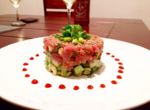
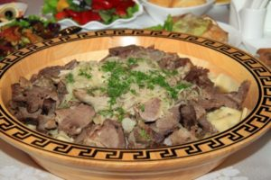
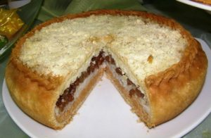
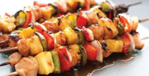
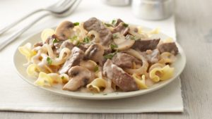
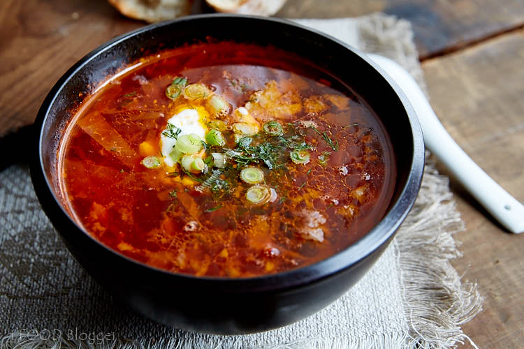

1 Tom Yum Goong (Spicy Shrimp Soup)
The quintessential Thai aroma! A bold, refreshing blend of fragrant lemongrass, chilli, galangal, lime leaves, shallots, lime juice and fish sauce shapes this classic soup, giving it its legendary herbal kick. Succulent fresh prawns and straw mushrooms lend it body. A versatile dish that can fit within virtually any meal, the distinctive smell reminds you of exotic perfume, while it's invigorating sour-spicy-hot taste just screams 'Thailand'!
2 Som Tum (Spicy Green Papaya Salad)
Hailing from the Northeast state of Isaan, this outlandish dish is both great divider - some can't get enough of its bite, some can't handle it - and greatly distinctive. Garlic, chilies, green beans, cherry tomatoes and shredded raw papaya get dramatically pulverized in a pestle and mortar, so releasing a rounded sweet-sour-spicy flavour that's not easily forgotten. Regional variations throw peanuts, dry shrimp or salted crab into the mix, the latter having a gut-cleansing talent that catches many newcomers by surprise!
3 Pad Thai (Thai style Fried Noodles)
From Cape Town to Khao San Road, the default international Thai dish! Dropped in a searing hot wok, fistfuls of small, thin or wide noodles (you choose) do a steamy minute-long dance alongside crunchy beansprouts, onion and egg, before disembarking for the nearest plate. A truly interactive eating experience, half its fun (and flavour) lies in then using a quartet of accompanying condiments - fish sauce, sugar, chilli powder and finely ground peanuts - to wake it from its slumbers.

4 Pad Krapow Kai Saap (Fried Basil and Chicken)
An incredibly popular ‘one plate’ dish for lunch or dinner, fried basil and chicken is certainly one of the most popular Thai dishes. It is made in a piping hot wok with lots of holy basil leaves, large fresh chilli, pork, green beans, soy sauce and a little sugar. The minced, fatty pork is oily and mixes with the steamed white rice for a lovely fulfilling meal. It is often topped with a fried egg (kai dao) you will most likely be asked if you would like an egg with it. Be aware that most Thai people ask for lots of chilli in this dish so if you are not a fan of tingling lips, ask for you pad krapow ‘a little spicy’
5 Gaeng Keow Wan Kai (Green Chicken Curry)
Morsels of fresh chicken. Cherry-sized eggplants. Tender bamboo shoots. Sprigs of Coriander. Generous handfuls of sweet basil. These humble elements form the body of this seminal curry. But how does it get so gloriously green you ask? Oh, that'll be the spoons of green curry paste that's stirred furiously into hot creamy coconut milk. Served alongside a bowl of fragrant Thai rice, Gaeng Keow Kan Gai is the extreme opposite.
6 Lab Nua (Spicy Beef Salad)
If there was such a thing as a 'Salad Hall of Fame', Thailand's zesty own breed, or 'Lab' as they are known here, would surely take pride of place. Unconvinced? Experience the fresh, fiery thrill of Lab nua - with its sprightly mix of onion, coriander, spearmint, lime, dried chili and tender strips of beef - and you won't be. It perfectly embodies the invigorating in-the-mouth-thrill of all Thai salads, the yummy-ness of Lab
7 Kai Med Ma Muang (Chicken with Cashew Nuts)
Pardon the pun, but tourists go nuts for this stir fried dish. Perhaps it's the wildly contrasting textures of a dish that saut's chicken alongside roasted cashews, sweet soy sauce, onions, chilies, pepper, carrot and mushrooms. Perhaps it's the sweetening dash of honey that appeals. Do you really care? The important thing is that this dish works: it's simple but scrumptious, a little bit tame and yet still totally Thai.
8 Khao Pad (Fried Rice)
Fried rice, egg, onion, a few herbs - nothing more, nothing less. A popular lunch dish served typically with a wedge of lime and slices of cucumber, the secret of this unpretentious dish lies in its simplicity. The concept is this: you're the one devouring it, so you dress it. To do so, Thais use everything from prawns, crab or chicken to basil, chili and left-over vegetables, in the process turning an unremarkable pauper into a gastronomic prince!
9 Tom Kha Kai (Chicken in Coconut Soup)
A mild, tamer twist on Tom Yum, this iconic soup infuses fiery chilies, thinly sliced young galangal, crushed shallots, stalks of lemongrass and tender strips of chicken. However unlike its more watery cousin, lashings of coconut milk soften its spicy blow. Topped off with fresh lime leaves, it's a sweet-smelling concoction, both creamy and compelling.
10 Gaeng Daeng (Red Curry)
Made with morsels of meat, red curry paste, smooth coconut milk and topped off with a sprinkling of finely sliced kaffir lime leaves, this rich, aromatic curry always gets those taste buds tingling. At its best when the meat is stunningly tender, it could be likened to a beautiful woman: it's mild, sweet and delicately fragrant. And like all true love affairs, absence makes the heart grow fonder.1